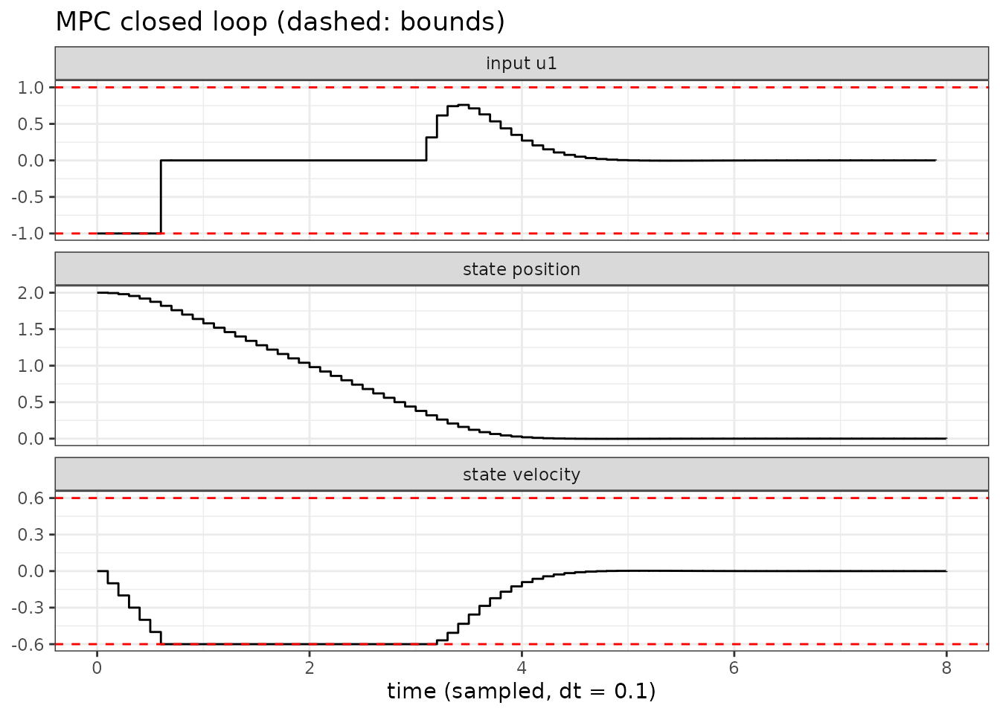
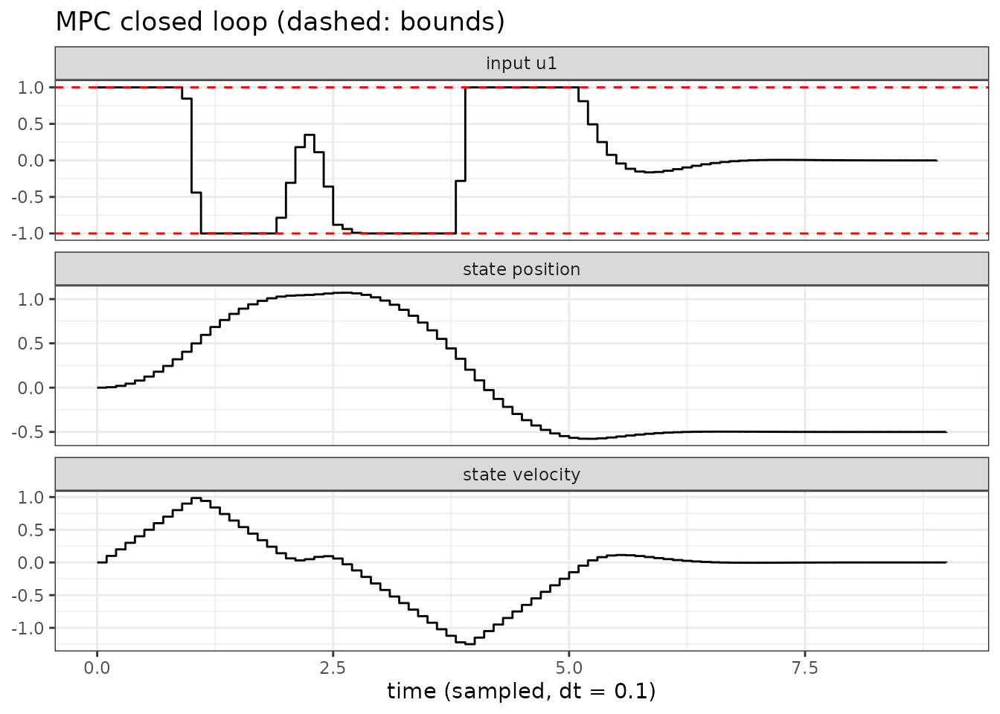

Model predictive control (MPC) solves, at every sample, a finite-horizon optimal control problem from the current state, applies the first input and repeats. Constraints on inputs, input rates, states and outputs are part of the problem, which is the reason to use MPC.
The optimization problem
For the discrete model x_{k+1} = A x_k + B
u_k, y_k = Cx_k + Du_k,
ctrl_mpc() sets up
\min \sum_{k=0}^{N-1} \Big[\|x_k - x^r_k\|_Q^2 + \|u_k - u^r_k\|_R^2
+ \|y_k - y^r_k\|_{Q_y}^2 + \|\Delta u_k\|_{R_d}^2\Big]
+ \|x_N - x^r_N\|_P^2
subject to x_0 = x(t), the
dynamics, and
- input bounds u_{\min} \le u_k \le u_{\max}, k = 0, \ldots, N-1;
- rate bounds on \Delta u_k = u_k - u_{k-1}, where u_{-1} is the input applied at the previous sample;
- state bounds on x_1, \ldots, x_N and output bounds on y_1, \ldots, y_N (the current state cannot be changed);
- the control horizon: u_k = u_{N_c - 1} for k \ge N_c;
- optionally a terminal equality or polyhedral terminal set.
The input u_k acts between x_k and x_{k+1}, so the first predicted state the decision affects is x_1.
A double integrator with limits
plant <- ctrl_c2d(ctrl_ss(matrix(c(0, 1, 0, 0), 2, byrow = TRUE), c(0, 1),
c(1, 0), state_names = c("position", "velocity")), 0.1)
mpc <- ctrl_mpc(plant, horizon = 20, Q = diag(c(10, 1)), R = 0.1,
u_min = -1, u_max = 1,
x_min = c(-Inf, -0.6), x_max = c(Inf, 0.6))
mpc
#> Linear MPC (dt = 0.1): horizon 20, control horizon 20
#> 62 decision variables, 82 constraint rows
#> u in [-1] .. [1]
#> x in [-Inf, -0.6] .. [Inf, 0.6]One step and the predicted plan
step <- ctrl_mpc_step(mpc, x = c(2, 0))
step
#> MPC step: status "solved"
#> u = -1
#> objective: 539.874, iterations: 1175, max bound violation: 1.97e-09
head(step$x_plan)
#> [,1] [,2]
#> [1,] 2.000 -9.391703e-13
#> [2,] 1.995 -1.000000e-01
#> [3,] 1.980 -2.000000e-01
#> [4,] 1.955 -3.000000e-01
#> [5,] 1.920 -4.000000e-01
#> [6,] 1.875 -5.000000e-01
head(step$u_plan)
#> [,1]
#> [1,] -1
#> [2,] -1
#> [3,] -1
#> [4,] -1
#> [5,] -1
#> [6,] -1Every step reports the solver status, the objective (including constants, so it equals the cost of the plan), the largest bound violation of the returned plan and the residual of the dynamics equations. These diagnostics make solver tolerance problems visible.
The receding-horizon loop
sim <- ctrl_simulate_mpc(mpc, x0 = c(2, 0), steps = 80)
summary(sim)
#> MPC simulation: 80 samples, 0 failed solves (0%)
#> solver statuses: solved = 80
#> solve time: mean 0.000603 s, max 0.00182 s; mean iterations 392.2
#> max input bound violation: 3.26e-11
#> max state bound violation (true plant): 0
#> max slack: 0
plot(sim)
The velocity stays within its limit of 0.6 and the input within one.
The QP behind it
The problem is assembled once as a sparse QP in OSQP form, \min \frac12 z^\top H z + q^\top z subject to
l \le A z \le u, with z = (x_0, \ldots, x_N, u_0, \ldots, u_{N-1}).
Only q, l and u change from
sample to sample, so OSQP reuses its factorization and starts from the
shifted previous solution. ctrl_mpc_qp() exposes the
matrices:
qp <- ctrl_mpc_qp(mpc, x = c(2, 0))
dim(qp$H)
#> [1] 62 62
dim(qp$A)
#> [1] 82 62
Matrix::nnzero(qp$A) / prod(dim(qp$A)) # sparsity
#> [1] 0.03579858
qp$xi(1) # positions of x_1 in z
#> [1] 3 4
qp$ui(0) # position of u_0 in z
#> [1] 43Before calling the solver, the weights are checked: Q,
P, Qy and Rd must be positive
semidefinite and R + Rd positive definite, so the QP is
convex and strictly convex in the inputs.
Tracking a reference
References may be constant vectors, matrices with one row per stage (preview) or functions of the time index:
mpc_y <- ctrl_mpc(plant, horizon = 20, Q = 0, Qy = 10, R = 0.1,
u_min = -1, u_max = 1)
ref <- function(k) if (k < 40) 1 else -0.5
sim_y <- ctrl_simulate_mpc(mpc_y, x0 = c(0, 0), steps = 90,
reference = list(y = ref))
plot(sim_y)
Infeasibility and failure handling
Hard constraints can make the problem infeasible, for example when the state already violates a bound or the input is too weak to keep it. A failed solve never returns an input silently:
tight <- ctrl_mpc(plant, horizon = 5, Q = diag(2), R = 1, u_min = -0.1,
u_max = 0.1, x_min = c(-Inf, -0.05), x_max = c(Inf, 0.05))
st <- ctrl_mpc_step(tight, c(0, 1))
st$ok
#> [1] FALSE
st$status
#> [1] "primal infeasible"In a closed-loop simulation the default
on_failure = "stop" raises an error. The explicit fallbacks
"hold" (keep the previous input) and "shifted"
(use the next move of the last successful plan) are recorded in the
log:
sim_f <- ctrl_simulate_mpc(tight, c(0, 1), steps = 5, on_failure = "hold")
sim_f$log[, c("k", "status", "fallback")]
#> k status fallback
#> 1 1 primal infeasible hold
#> 2 2 primal infeasible hold
#> 3 3 primal infeasible hold
#> 4 4 primal infeasible hold
#> 5 5 primal infeasible holdSoft constraints (next article) are the usual remedy.
Stability is not automatic
A successful QP solve at every sample does not imply closed-loop
stability. With P = "lqr", stability holds near the origin
where the constraints are inactive; with active constraints one needs a
terminal set that is invariant under the LQR law, or
terminal = "equality". The terminal equality gives
recursive feasibility and stability only when the reference is an
admissible equilibrium of the model (its state and input satisfy the
bounds and the dynamics), the first problem is feasible, and the full
horizon is free (no shorter control horizon, no rate bounds); a
reference that is not an equilibrium can make the next problem
infeasible. Short horizons with P = Q can destabilize
unstable plants.
Comparing controllers
lqr <- ctrl_lqr(plant, diag(c(10, 1)), 0.1)
sat_lqr <- function() {
x <- c(2, 0)
X <- matrix(0, 81, 2)
U <- numeric(80)
X[1, ] <- x
for (k in 1:80) {
U[k] <- max(-1, min(1, -drop(lqr$K %*% x)))
x <- drop(plant$A %*% x + plant$B * U[k])
X[k + 1, ] <- x
}
list(time = (0:79) * 0.1, y = X[1:80, 1], u = U, v = X[, 2])
}
mpc_run <- function() {
s <- ctrl_simulate_mpc(mpc, c(2, 0), 80)
list(time = s$time[1:80], y = s$y[, 1], u = s$u[, 1])
}
ctrl_compare_controllers(list(saturated_lqr = sat_lqr, mpc = mpc_run),
reference = 0, u_min = -1, u_max = 1)
#> controller IAE ISE ITAE RMSE control_effort max_abs_u
#> 1 saturated_lqr 3.188662 4.417522 3.589068 0.7597304 3.5171881 1
#> 2 mpc 3.957788 5.612446 4.915165 0.8523824 0.8770798 1
#> max_violation convention
#> 1 0.000000e+00 trapezoidal
#> 2 1.252676e-10 trapezoidalThe saturated LQR is faster here only because it ignores the velocity limit of 0.6, which MPC respects: